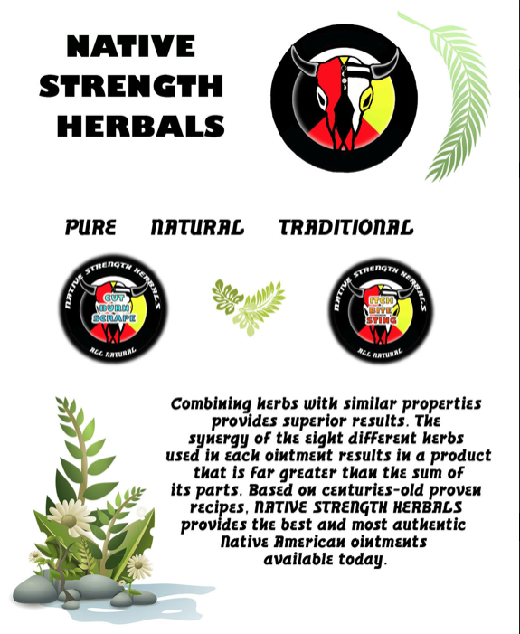

Native Strength Herbals are based on traditional Native American recipes. Hyapatia studied with herbal healing with Gladys Tantaguideon. Gladys was a Mohican medicine woman. Her brother Harold was the last chief of the Mohicans and she wrote books such as Folk Medicine of the Delaware and A Study of Delaware Indian Medicine Practice and Folk Beliefs. Traditional herbal healing is based on the premise that the whole is greater than the sum of its parts. This means that two herbs with similar properties will work together to create the medicinal properties one might expect from three or more herbs. This is why many traditional recipes call for a number of herbs for superior strength. Native Strength Herbals uses eight different herbs in each of its ointments. There are no petroleum products used in these products. They are never tested on animals, although they are perfectly safe for animals. The ingredients can actually be eaten with no ill effects, although it probably won't taste very pleasant. Both ointments can be used as often as needed. No preservatives are included as the herbs used in these ointments have their own preservative qualities.

Please click below to order these awesome products today!
Herbals